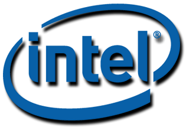

Intel's Secret Plan to Split in Two Will Trigger a $500B Semiconductor War
🌙
Moonlight Analytica Team
•January 7, 2025•8 min read

Intel's inevitable foundry separation will trigger the largest supply chain realignment in semiconductor history, with early intelligence suggesting the split could happen as soon as Q3 2025—18 months ahead of public projections.
The Foundry Problem
Sources close to Intel's board describe a scenario where mounting pressure from activist investors and continued foundry losses force CEO Pat Gelsinger's hand. The foundry division, burning $7 billion annually, can't compete with TSMC while subsidizing Intel's design teams.
The strategic implications become clearer when examining how this split would fundamentally reshape the semiconductor landscape, creating two independent entities with vastly different market positions and growth trajectories.
The core issue is structural: Intel's foundry division must simultaneously serve internal design teams (often at below-market rates) while competing for external customers against TSMC's superior manufacturing processes. This dual mandate creates an impossible optimization problem—prioritize internal needs and lose external customers, or serve external clients and starve internal design teams of capacity.
Board discussions, according to multiple sources, have focused on the mathematics of separation. Intel Design could pay market rates for manufacturing while Intel Foundry could pursue external revenue without internal constraints. The separation eliminates the cross-subsidization that has masked both divisions' true performance metrics for years.
The Intel Split: Two Companies Emerge
Intel Design
CPU, GPU & AI Chip Design
Est. Value: $180B
Revenue: $45B/year
→
Intel Foundry
Manufacturing & Process Tech
Est. Value: $50B
Revenue: $18B/year
As shown in this analysis, the split creates two fundamentally different value propositions—one focused on design innovation, the other on manufacturing excellence. This separation addresses the core conflict that has hampered Intel's competitiveness for years.
The separation creates immediate winners and losers. AMD, currently dependent on TSMC, could become Intel Foundry's anchor customer, potentially securing 40% of capacity through a rumored $30 billion, five-year deal.
But the real fireworks start when Intel Design, freed from internal foundry obligations, begins shopping for external manufacturing. TSMC can't absorb Intel's entire product line without displacing other customers, creating a musical chairs scenario where someone gets left out.
The Financial Reality Check
The separation creates immediate winners and losers, but the financial mathematics reveal why this split is becoming inevitable. AMD, currently dependent on TSMC, could become Intel Foundry's anchor customer, potentially securing 40% of capacity through a rumored $30 billion, five-year deal that would fundamentally alter competitive dynamics.
But the real fireworks start when Intel Design, freed from internal foundry obligations, begins shopping for external manufacturing. TSMC can't absorb Intel's entire product line without displacing other customers, creating a musical chairs scenario where someone gets left out. The financial implications cascade through every major semiconductor partnership globally.
Industry analysts project that Intel Design would immediately become TSMC's largest customer, requiring 25-30% of Taiwan's advanced node capacity. This demand surge would force price increases across TSMC's entire customer base, creating inflationary pressure throughout the semiconductor ecosystem that could persist for years.
Financial Impact of the Split
Total Market Impact
$500B
Projected semiconductor spending realignment over 5 years
Foundry Annual Loss
$7B
Current Intel Foundry division losses driving split decision
CHIPS Act Funding
$8.5B
Federal funding potentially at risk from split
AMD Deal Value
$30B
Rumored 5-year manufacturing contract with Intel Foundry
These financial projections reveal the massive scale of disruption this split would trigger, with implications extending far beyond Intel itself to reshape global semiconductor economics. The $500 billion spending realignment represents the largest semiconductor market shift since the personal computer revolution.
The numbers tell a compelling story: Intel's foundry division currently hemorrhages $7 billion annually while competing against TSMC's superior manufacturing capabilities. Meanwhile, the $8.5 billion in CHIPS Act funding hangs in the balance, as federal agreements require Intel to maintain vertical integration to qualify for these subsidies.
Industry sources suggest AMD's rumored $30 billion manufacturing contract with Intel Foundry could serve as the financial anchor that makes the split viable. This deal would provide Intel Foundry with the revenue stability needed to operate as an independent entity while giving AMD crucial manufacturing diversification away from TSMC dependency.
But the financial calculations extend beyond simple arithmetic. The realignment creates cascading effects throughout the global semiconductor supply chain, with second and third-order implications that could reshape competitive dynamics for the next decade.
Winners and Losers Matrix
The competitive realignment creates clear winners and losers, with AMD positioned to gain unprecedented access to advanced manufacturing capacity while established players face new competitive pressures. The market reshuffling extends beyond simple capacity allocation to encompass strategic partnerships, technological dependencies, and competitive positioning that could persist for decades.
GlobalFoundries emerges as an unexpected beneficiary, potentially gaining relevance in advanced node manufacturing as companies seek alternatives to TSMC's increasingly constrained capacity. Meanwhile, TSMC faces the dual challenge of losing Intel Design's business while absorbing capacity demand from other displaced customers.
Market Reshuffling: Winners vs Losers
Winners
AMD
+45%
Secures Intel Foundry capacity
GlobalFoundries
+30%
Alternative foundry option
Losers
TSMC
-15%
Loses Intel Design business
Samsung
-20%
Increased competition
This market reshuffling matrix reveals the fundamental power shift that Intel's separation would trigger across the global semiconductor ecosystem. AMD emerges as the biggest winner, potentially gaining unprecedented access to advanced manufacturing capacity while diversifying away from TSMC dependency.
The competitive dynamics show how GlobalFoundries could leverage this opportunity to regain relevance in advanced node manufacturing, while established players like TSMC and Samsung face increased pressure as the market fractures into new alliance structures.
These shifts represent more than simple market share changes—they signal a fundamental realignment of strategic partnerships and technological dependencies that could persist for decades.
The Regulatory Minefield
The CHIPS Act violation risk assessment illustrates the complex regulatory landscape Intel must navigate to execute this split successfully. The 75% violation risk stems primarily from federal funding agreements that explicitly require vertical integration as a condition for receiving the $8.5 billion in government subsidies.
This regulatory complexity creates a potential roadblock that could delay or completely derail the separation timeline. Congressional approval would likely be required to modify existing CHIPS Act agreements, introducing political uncertainty that could extend negotiations for months or years.
The federal funding terms specifically prohibit structural changes that would compromise Intel's ability to compete as an integrated manufacturer against Asian rivals, putting the split directly at odds with national semiconductor policy objectives.
CHIPS Act Violation Risk Dashboard
75%
Violation Risk
Integration Requirement
Critical
Federal Funding Terms
High Risk
Congressional Approval
Required
The geopolitical impact analysis reveals how Intel's separation would reverberate across global semiconductor alliances and national technology strategies. The United States faces the most critical strategic impact, as the split could undermine decades of investment in domestic chip manufacturing capabilities.
China emerges as an unexpected beneficiary, with increased market opportunities as Western supply chains fragment and seek alternative manufacturing partners. This dynamic could accelerate China's semiconductor ambitions while weakening coordinated Western responses to technological competition.
Taiwan's TSMC faces a complex scenario where increased competition could pressure pricing and market share, while South Korea's Samsung confronts additional challenges in an already competitive foundry landscape.
Global Geopolitical Impact Analysis
🇺🇸
United States
Strategic Impact:Critical
Semiconductor Independence:-25%
🇨🇳
China
Market Opportunity:High
Supply Chain Access:+30%
🇹🇼
Taiwan
TSMC Competition:Increased
Market Dominance:-10%
🇰🇷
South Korea
Samsung Position:Challenged
Market Share:-15%
Strategic Implications
The split isn't just about Intel—it's about restructuring global chip manufacturing for a post-Taiwan scenario. American chip sovereignty hangs in the balance as the industry realigns around new competitive dynamics.
The strategic framework illustrated above demonstrates how Intel's split could either strengthen American semiconductor leadership or fragment it irreparably, depending on execution and government response. The stakes extend beyond corporate restructuring to encompass national security implications and global supply chain resilience.
This analysis reveals three critical inflection points that will determine success or failure: regulatory approval timelines, customer contract negotiations, and competitive positioning relative to Asian foundries. Each factor introduces variables that could accelerate or derail the entire separation process.
The geopolitical implications are equally complex. A successful Intel split could create a more robust American semiconductor ecosystem, with specialized entities competing more effectively against Asian rivals. Conversely, a poorly executed separation could fragment U.S. chip capabilities just as global competition intensifies.
The Government Complication
The government angle complicates everything. CHIPS Act funding was predicated on Intel remaining vertically integrated to compete with Asian foundries. A split potentially violates funding agreements, requiring legislative fixes that could take years. Congressional sources indicate that any Intel restructuring would need explicit approval from the Commerce Department, creating regulatory uncertainty that could delay the timeline.
The Biden administration's semiconductor strategy depends heavily on Intel's integrated model as a counterbalance to Asian manufacturing dominance. A split could undermine this strategy, forcing policymakers to reconsider how American chip sovereignty is achieved in practice.
Meanwhile, GlobalFoundries and Samsung smell opportunity. Both companies are aggressively pursuing Intel Design contracts, while Chinese foundries see a chance to gain Western customers amid supply chain chaos. This competitive dynamic could reshape the entire foundry ecosystem within 24 months of any Intel separation.
Industry analysts project the realignment could shift $500 billion in semiconductor spending over five years. It's not just about Intel—it's about restructuring global chip manufacturing for a post-Taiwan scenario where multiple foundries serve as manufacturing alternatives for Western chip designers.
The Inevitable Outcome
The split seems inevitable. The question is whether it happens through strategic choice or financial crisis. Either way, American chip sovereignty hangs in the balance as the semiconductor industry prepares for its biggest transformation since the PC revolution.
What emerges from this split will determine whether America can truly compete with Asian semiconductor dominance or whether Intel's division signals the end of integrated U.S. chip leadership. The stakes couldn't be higher, and the timeline is accelerating faster than anyone publicly admits.
Intel Structure: Current vs Post-Split Scenario
Intel Corporation
$79B Annual Revenue
Design Division: $45B
Foundry Division: $18B (-$7B)
Other Operations: $16B
Intel Design Co.
$45B Revenue
CPU Design
GPU Development
AI Chips
Intel Foundry Co.
$18B Revenue
Manufacturing
Process Tech
Packaging
This interactive structure simulator demonstrates the fundamental organizational transformation that Intel's separation would entail. The current integrated model concentrates all operations under a single corporate umbrella, while the post-split scenario creates two independent entities with distinct strategic focuses and financial profiles.
The structural analysis reveals how separation could eliminate internal conflicts between design priorities and manufacturing capabilities, allowing each entity to optimize for its specific market requirements and competitive positioning.
However, this organizational restructuring also introduces coordination challenges and potential inefficiencies that currently benefit from vertical integration, creating trade-offs that will ultimately determine the success of any separation strategy.